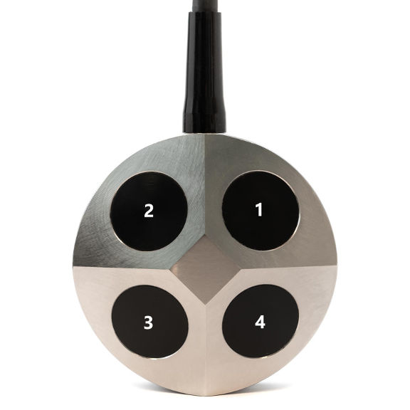
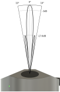
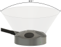

DVL-A50 details
Axis convensions
The axis on the DVL-A50 are oriented North-East-Down (NED)
- X axis is pointing forward (LED is forward, cable backward)
- Y axis is pointing right
- Z axis is pointing down (mounting holes are up, transducers are down)
Transducer numbering

Transducer beam width

Half-power beam width is 4.4°
Line of sight

Ethernet Interface
The DVL has a few services available on ethernet:
- Multicast DNS (mDNS) for easy discovery
- Web gui for easy setup and diagnostic
- TCP low latency velocity updates
- Updater for software upgrades
Multicast DNS (mDNS)
Factory default for the DVL is to operate a DHCP client. This means it will attempt to obtain an IP address from a DHCP server on the same network.
For convenience the DVL supports mDNS to easily discover the assigned IP address.
The mDNS name used for the DVL is: waterlinked-dvl.
Note
If no DHCP server is avaiable on the network, it is recommended to configure a static ip address as the DVL can use up to 5 minutes searching for a DHCP server.
Web GUI
On operating systems supporting mDNS you can open the web GUI the following URL: http://waterlinked-dvl. If mDNS is not supported you need to obtain the IP address of the DVL and use that in your browser (http://IP_ADDRESS).
The web GUI shows the status of the DVL (velocity and altitude) as well as diagnostic information. The web GUI also allows for network configuration.
Network config
The DVL has two IP configuration options though the web GUI:
- DCHP client, where it obtains an IP address from a DHCP server on the same network.
- Static mode where the user sets the wanted IP address for the DVL.
Once the IP configuration is modified the DVL needs to be rebooted for the settings take effect.
TCP Output
The DVL supports sending measurements updates using the Transmission Control Protocol (TCP). A TCP server is available on port 16171 which outputs the latest measurements to all the connected clients. In the web GUI you can see the number of connected clients and the format of the output message. See description of the output protocol.
Software update
To get the best performance of the DVL it is recommended to always run the latest software. The update GUI can automatically check if a new software version is available.
Automatic software update
The easiest way of checking if a new version is available is to connect the DVL to the internet and let the upgrade GUI automatically check for a new version:
- Connect the DVL ethernet to a network where the internet is available and make sure the DVL network configuration allows access to the internet.
- Go to http://waterlinked-dvl:9000 or http://IP_ADDRESS:9000.
- The upgrade GUI will automatically check if there is a new version available and allow installation of new upgrade with a single click.
Offline software update
If you are unable to connect the DVL to the internet, offline software update is available. The process is:
- Find the current version and chipid in the the "about" section of the DVL web gui
- Manually download an upgrade package (.wlup) from the update server using the chipid.
- Verify if the version downloaded is newer than the currently running version
- Go to http://waterlinked-dvl:9000 or http://IP_ADDRESS:9000.
- Select "manual upload" and then upload the downloaded file.
Fallback IP
For convenience the DVL will always be available with the static IP address: 192.168.194.95. To be able to connect to the DVL using the fallback IP address perform following steps:
- Connect a ethernet cable directly from the DVL to your computer.
- Set static IP our computer to be 192.168.194.90
- Open web browser open http://192.168.194.95